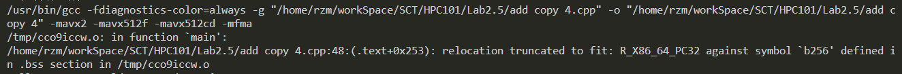
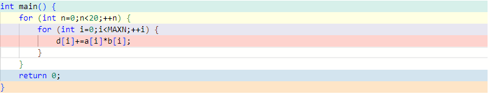
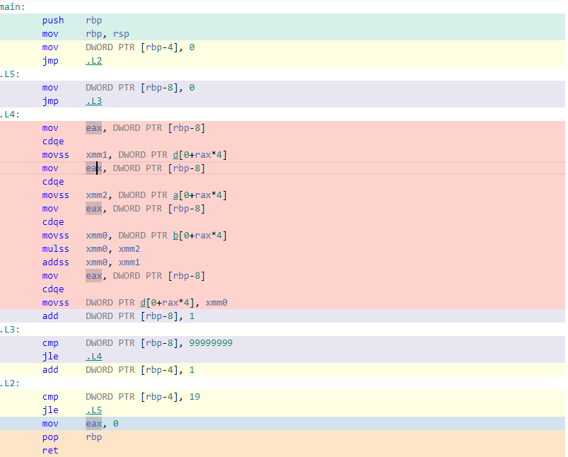

HPC101 Lab2.5 Report
HPC101 Lab 2.5
1. code
environment: wsl2
source
1
2
3
4
5
6
7
8
9
10
11
12
13
14
15
16
17
18
19
20
21
22
23
24
25
26
27
28
29
30
31
32
33
34
35
36
37
38
39
40
41
42
43
44
45
46
47
48
49
50
51
52
53
54
55
56
57
58
59
60
61
62
63
64
65
66
67
68
float a[MAXN];
float b[MAXN];
float c[MAXN];
float d[MAXN];
int main()
{
for (int i = 0; i < MAXN; ++i)
{
a[i] = 1.0 / (rand() + 1);
b[i] = 1.0 / (rand() + 1);
}
clock_t start_std, end_std;
start_std = clock();
for (int n = 0; n < 20; ++n)
{
for (int i = 0; i < MAXN; ++i)
{
d[i] += a[i] * b[i];
}
}
end_std = clock();
clock_t start, end;
start = clock();
for (int n = 0; n < 20; ++n)
{
int top=0,mxn=MAXN>>3;
for (int i=0;i<mxn;++i) {
__m256 a256=_mm256_load_ps(a+top);
__m256 b256=_mm256_load_ps(b+top);
__m256 c256=_mm256_load_ps(c+top);
c256=_mm256_fmadd_ps(a256,b256,c256);
_mm256_store_ps(c+top,c256);
top+=8;
}
}
end = clock();
float t=(double)(end - start) / CLOCKS_PER_SEC;
float t_std=(double)(end_std-start_std)/CLOCKS_PER_SEC;
printf("time=%f\n", t);
printf("std_time=%f\n", t_std);
printf("speed up: %fx\n",t_std/t);
for (int i = 0; i < MAXN; ++i)
{
if (fabs(c[i] - d[i]) / d[i] > 0.0001)
{
printf("Check Failed at %d\n", i);
return 0;
}
}
printf("Check Passed");
return 0;
}compile
1
gcc add.cpp -o add -mfma -mavx2
2. result
1 | time=2.037191 |
I carried out several tests and got the following result:
| id | acceleration ratio | accuracy |
|---|---|---|
| 1 | 2.383x | Passed |
| 2 | 2.311x | Passed |
| 3 | 2.314x | Passed |
| avg | 2.336x | 100% |
3. idea
use the data type __m256 to process 8 single-precision floating number at a time.
(__m256 has 32 byte to contain eight 4-byte float)
top : the position of the foremost of unprocessed data
Firstly, load the data from arrays
abc, using the function_mm256_load_ps(const float *__P)1
2
3__m256 a256=_mm256_load_ps(a+top);
__m256 b256=_mm256_load_ps(b+top);
__m256 c256=_mm256_load_ps(c+top);Then add
a256*b256toc256, using the function_mm256_fmadd_ps(__m256 __A, __m256 __B, __m256 __C)1
c256=_mm256_fmadd_ps(a256,b256,c256);
In the end, update
c, using the function_mm256_store_ps(float *__P, __m256 __A)1
_mm256_store_ps(c+top,c256);
update
top1
top+=8 // 8 = 32/4
4. other tests
use
__m128to replace__m2561
2
3
4
5
6
7
8
9
10
11
12for (int n = 0; n < 20; ++n)
{
int top=0,mxn=MAXN>>2;
for (int i=0;i<mxn;++i) {
__m128 a128=_mm_load_ps(a+top);
__m128 b128=_mm_load_ps(b+top);
__m128 c128=_mm_load_ps(c+top);
c128=_mm_fmadd_ps(a128,b128,c128);
_mm_store_ps(c+top,c128);
top+=4; // 4=128/32
}
}And got the result as follows:
| id | acceleration ratio | accuracy |
|---|---|---|
| 1 | 1.369x | Passed |
| 2 | 1.384x | Passed |
| 3 | 1.313x | Passed |
| avg | 1.355x | 100% |
From the result we find that the acceleration ratio of __m256 is 1.72 times as that of __m128, that’s because CPU can handle 2 times of data in single instruction with __m256.
use an array to reduce the times of type conversions
P.S This way we need add a global array, but it is against the rule. However it didn’t savea[i]*b[i]so it will keep the total calculation amount unchanged.1
2
3
4
5
6
7
8
9
10
11
12
13
14
15
16
17
18
19
20
21
22
23
24
25
26// ...
__m256 c256[MAXN/8];
int main()
{
// ...
for (int n = 0; n < 20; ++n)
{
int mxn=MAXN>>3;
for (int i=0;i<mxn;++i) {
__m256 a256=_mm256_load_ps(a+(i<<3));
__m256 b256=_mm256_load_ps(b+(i<<3));
if (!n) c256[i]=_mm256_mul_ps(a256,b256);
else c256[i]=_mm256_fmadd_ps(a256,b256,c256[i]);
}
if (n==19) {
for (int i=0;i<mxn;++i) {
_mm256_store_ps(c+(i<<3),c256[i]);
}
}
}
// ...
}Got the result as follows:
| id | acceleration ratio | accuracy |
|---|---|---|
| 1 | 2.873x | Passed |
| 2 | 2.877x | Passed |
| 3 | 2.888x | Passed |
| avg | 2.879x | 100% |
The acceleration ratio increases, but it also use more memory. When I want to set a256[MAXN/8] b256[MAXN/8]to further reduce the times of type conversions, an error occurs.

Maybe it is caused by memory excess.
5. assembler
normal

1
2
3
4
5
6
7
8
9
10
11
12
13
14
15
16
17
18
19
20
21
22
23movl -336(%rbp), %eax
cltq
leaq 0(,%rax,4), %rdx
leaq d(%rip), %rax
vmovss (%rdx,%rax), %xmm1
movl -336(%rbp), %eax
cltq
leaq 0(,%rax,4), %rdx
leaq a(%rip), %rax
vmovss (%rdx,%rax), %xmm2
movl -336(%rbp), %eax
cltq
leaq 0(,%rax,4), %rdx
leaq b(%rip), %rax
vmovss (%rdx,%rax), %xmm0
vmulss %xmm0, %xmm2, %xmm0
vaddss %xmm0, %xmm1, %xmm0
movl -336(%rbp), %eax
cltq
leaq 0(,%rax,4), %rdx
leaq d(%rip), %rax
vmovss %xmm0, (%rdx,%rax)
addl $1, -336(%rbp)
SIMD
1
2
3
4
5
6
7
8
9movl -328(%rbp), %eax
cltq
leaq 0(,%rax,4), %rdx
leaq a(%rip), %rax
addq %rdx, %rax
movq %rax, -248(%rbp)
movq -248(%rbp), %rax
vmovaps (%rax), %ymm0
vmovaps %ymm0, -240(%rbp)1
2
3
4
5
6
7
8
9movl -328(%rbp), %eax
cltq
leaq 0(,%rax,4), %rdx
leaq b(%rip), %rax
addq %rdx, %rax
movq %rax, -256(%rbp)
movq -256(%rbp), %rax
vmovaps (%rax), %ymm0
vmovaps %ymm0, -208(%rbp)1
2
3
4
5
6
7movl -328(%rbp), %eax
cltq
leaq 0(,%rax,4), %rdx
leaq c(%rip), %rax
addq %rdx, %rax
movq %rax, -264(%rbp)
movq -264(%rbp), %rax1
2
3
4
5
6
7
8
9
10
11
12
13
14
15
16
17
18
19
20
21
22
23
24
25
26
27vmovaps (%rax), %ymm0
vmovaps %ymm0, -176(%rbp)
vmovaps -240(%rbp), %ymm0
vmovaps %ymm0, -112(%rbp)
vmovaps -208(%rbp), %ymm0
vmovaps %ymm0, -80(%rbp)
vmovaps -176(%rbp), %ymm0
vmovaps %ymm0, -48(%rbp)
vmovaps -80(%rbp), %ymm1
vmovaps -48(%rbp), %ymm0
vfmadd231ps -112(%rbp), %ymm1, %ymm0
nop
vmovaps %ymm0, -176(%rbp)
movl -328(%rbp), %eax
cltq
leaq 0(,%rax,4), %rdx
leaq c(%rip), %rax
addq %rdx, %rax
movq %rax, -272(%rbp)
vmovaps -176(%rbp), %ymm0
vmovaps %ymm0, -144(%rbp)
movq -272(%rbp), %rax
vmovaps -144(%rbp), %ymm0
vmovaps %ymm0, (%rax)
nop
addl $8, -328(%rbp)
addl $1, -324(%rbp)But I can’t understand the assembly code…
6. note
data type
| name | element | size |
|---|---|---|
__m128 |
4*float |
4*32 bit |
__m128d |
2*double |
2*64 bit |
__m128i |
various type of integer | 128 bit |
__m256 |
8*float |
8*32 bit |
__m256d |
4*double |
4*64 bit |
__m256i |
various type of integer | 256 bit |
int,short,char,long long and other integer-like type can be loaded into __m128i and __m256i.
functions
_mm<bit_width>_<name>_<data_type>
<bit_width>is the size of value this function returns. (like 256 and 512)
if it is empty, it means the size of value is 128 bit<name>indicates the function’s function.<abs>,<add>,<and>,<andnot>,<avg>,<sub>,<mul>,<or>,<max>,<min>,<xor>: obviously indicates its function<fmadd>,<fmsub>: take 3 parametersa,b,c, and returna*b+cora*b-c<fnmadd>,<fnmsub>: take 3 parametersa,b,c, and return-a*b+cor-a*b-c<broadcast>: take 1 parametersa, broadcast the data fromato all elements of returned value.<cmpeq>: Compare packed data inaandbfor equality, and return the result. (all 1=equal, all 0=unequal)<cmpgt>: Compare packed data inaandb, and return the greater one.- …
<data_type>tells the function what type of input data it should be treated as.pd: doubleps: floatph: half-precision floating-pointepi<x>: signed x-bit integerepu<x>: unsigned x-bit integersi<x>: a pack of x bits integer number- …
reference: